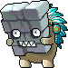

Lv. 24 · #2230111
스톤 마스크
무거운 석판을 뒤집어 쓴채 장난을 일삼는 정체불명의 생명체다. 우드 마스크와 마찬가지로 그 정체에 대해서는 여러 설만 난무할 뿐, 진정한 정체를 아는 사람은 아무도 없다. 호기심이 많아 무엇이든 처음 보는 물건은 모두 집어가기 때문에 종종 사람들의 물건을 훔쳐간다.
스탯
레벨 24- HP
- 600
- MP
- 0
- EXP
- 45
- 넉백 가능 데미지
- 1+
- 물리 데미지
- 95
- 마법 데미지
- 0
- 물리 방어력
- 35
- 마법 방어력
- 40
- 속도
- -30
- 24레벨 에서의 필요 명중
- 36.66
- 메소
- 180.0
- 속성관계
- 미기재
- 체경비
- 13.33
- 형태
- 악마형
출현 지역
출현 맵 2개맵 이름을 누르면 메이플노트의 맵 정보가 열립니다.
드롭 테이블
전체 23개| 아이템 | 아이템 ID | 드롭 확률 |
|---|---|---|
| 석판 | 4000197 | 40% |
| 파란 포션 | 2000003 | 1% |
| 주황 포션 | 2000001 | 1% |
| 활전용 화살 | 2060000 | 0.8% |
| 석궁전용 화살 | 2061000 | 0.8% |
| 민첩함의 물약 | 2002000 | 0.3% |
| 강철의 원석 | 4010001 | 0.2% |
| 에메랄드의 원석 | 4020003 | 0.2% |
| 오리할콘의 원석 | 4010005 | 0.1% |
| 더블테일 너클 | 1482002 | 0.07% |
| 바이킹 소드 | 1302002 | 0.01% |
| 아이스 완드 | 1372004 | 0.01% |
| 파란색 파오 | 1040042 | 0.01% |
| 파란색 파오 바지 | 1060031 | 0.01% |
| 스카이 샤크 | 1041023 | 0.01% |
| 스카이 샤크 치마 | 1061019 | 0.01% |
| 라이덴 | 1452005 | 0.008% |
| 그린 마커 | 1082049 | 0.007% |
| 레드 루티아 | 1082051 | 0.007% |
| 백의 주문서 1% | 2049000 | 0.007% |
| 창 공격력 주문서 60% | 2044301 | 0.004% |
| 스태프 마력 주문서 60% | 2043801 | 0.004% |
| 귀 장식 지력 주문서 60% | 2040301 | 0.004% |
조건에 맞는 드롭 아이템이 없습니다.
확률은 메이플노트에 게시된 값입니다. 아이템 이름을 누르면 원본 아이템 정보가 열립니다. 과거 버전 데이터이므로 실제 메이플랜드와 다를 수 있습니다.